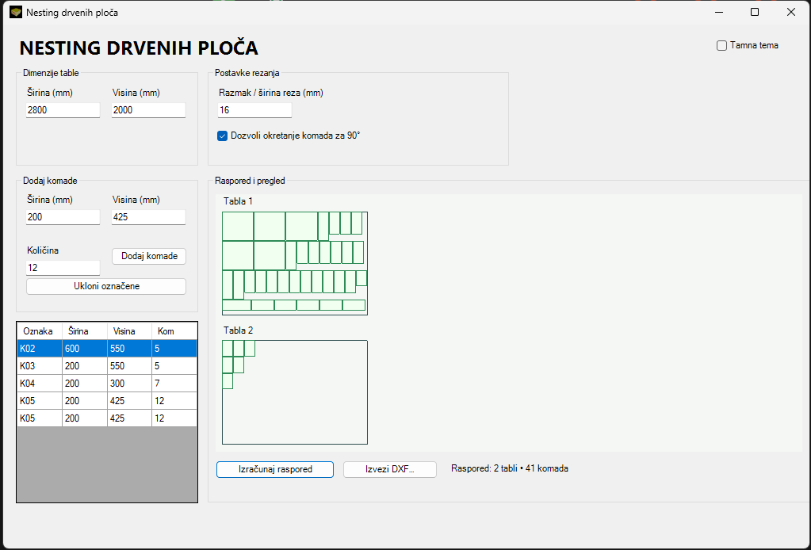
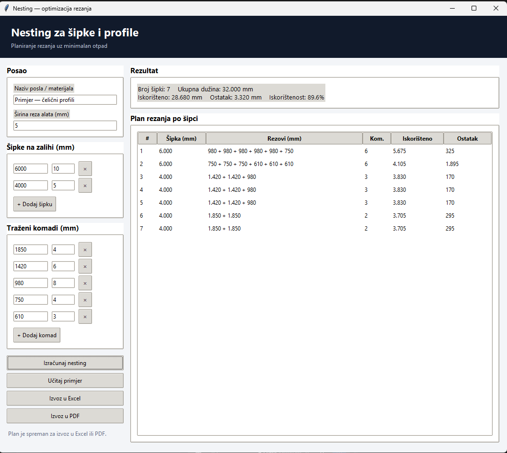

CAD automatizacija
Makroi i prilagođene aplikacije ubrzavaju ponavljajuće operacije u CAD okruženju i smanjuju ručne korake.
Brži rad u konstrukcijiRazvijamo aplikacije koje automatizuju CAD zadatke i povezuju konstrukciju sa pripremom proizvodnje. Vaš tim dobija više vremena za precizan inženjerski rad.
Praktične aplikacije za korake koji se ponavljaju, oduzimaju vreme ili traže doslednost kroz svaki projekat.
Makroi i prilagođene aplikacije ubrzavaju ponavljajuće operacije u CAD okruženju i smanjuju ručne korake.
Brži rad u konstrukcijiPodaci iz modela mogu da pokrenu izradu crteža, oznaka i pratećih dokumenata prema dogovorenim pravilima.
Dosledna dokumentacijaOrganizujemo prenos tehničkih podataka i zadataka od konstrukcije ka sledećoj fazi proizvodnog procesa.
Jasniji tok radaAutomatsko izdvajanje, sređivanje i izvoz informacija kao što su sastavnice, mere i proizvodni podaci.
Manje prepisivanjaRazvijamo rešenja prema vašem CAD softveru, pravilima rada i koracima koji već postoje u timu.
Prilagođeno procesuPregled aplikacija i rešenja koja smo razvili za konkretne zadatke u pripremi proizvodnje.

Aplikacija za unos dimenzija table i komada, određivanje razmaka reza i izračunavanje rasporeda uz mogućnost rotacije komada. Rezultat se može izvesti u DXF format.

Planiranje rezanja šipki prema zalihama i traženim komadima. Unesite dužine, količine i širinu reza; aplikacija prikaže plan rezanja, iskorištenost i preostali materijal.
Počinjemo od zadatka koji usporava posao. Zatim oblikujemo rešenje koje se uklapa u način na koji vaš tim već projektuje i priprema proizvodnju.
Upoznajemo ulazne podatke, izuzetke i rezultat koji je timu potreban.
Proveravamo logiku na vašim primerima i doterujemo radni tok.
Alat, uputstvo i podrška prate stvarne potrebe korisnika.
Kada se rutina prepusti pouzdanim alatima, inženjeri mogu više pažnje da posvete kvalitetu rešenja i potrebama proizvodnje.
Opišite CAD zadatak ili deo pripreme proizvodnje koji želite da pojednostavite. Zajedno možemo pronaći dobar početak.